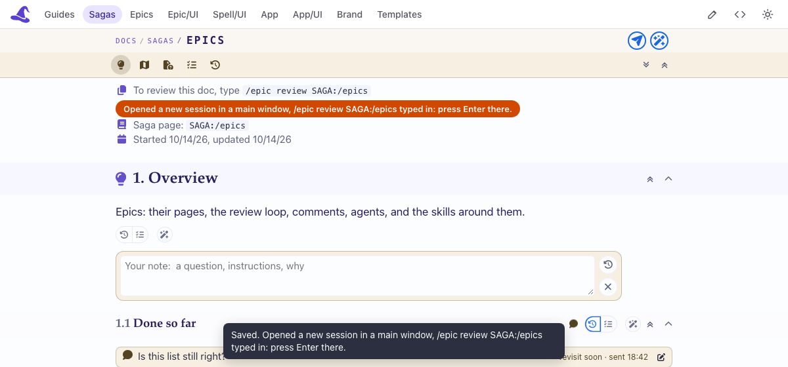

/epic review SAGA:/epics typed in, and the page says
"Opened a new session in a main window, /epic review SAGA:/epics typed in: press Enter there."

Taken on a scratch copy, the wake answering in the real one's words.
Tell Claude what the page said after Send, and what opened (nothing, a worktree window ...).
Carried over from
Open a saga page from the page server (the Epic Tooling one, say), in the Review tab. Leave a note on "1.1 Done so far" and a bullhorn comment on a paragraph, then press Send in the header.
/epic review SAGA:/epics typed in; press Enter there.
Claude · 2026-10-19 13:14
Checked by Claude, in Chromium on this branch's server over a scratch copy of the content folder, the wake stubbed (it records what it was asked, and types nothing):
sagas/epics/epics.saga.html): a Revisit note on "1.1 Done so far" and a bullhorn comment on its first paragraph both landed in the
saga's own inbox, epics.inbox.json5.
SAGA:/epics (once), and the page
said what the wake answered.
epic inbox SAGA:/epics wait exited at once, listing both: O1's note to talk over, and M1 to
answer on its thread; epic inbox SAGA:/epics#M1 done --file answered it.
Left for Owen, only the real wake:
Step: with no session reviewing it, open the Epic Tooling saga page in the side bar's Review tab, leave a note on 1.1 Done so far, and press Send (the paper plane, top right).
Should: a new Claude session opens in a main window with /epic review SAGA:/epics typed in,
and the page says so. Press Enter there: it lists your note.
If not: tell Claude what the page said after Send, and what opened (nothing, a worktree window ...).